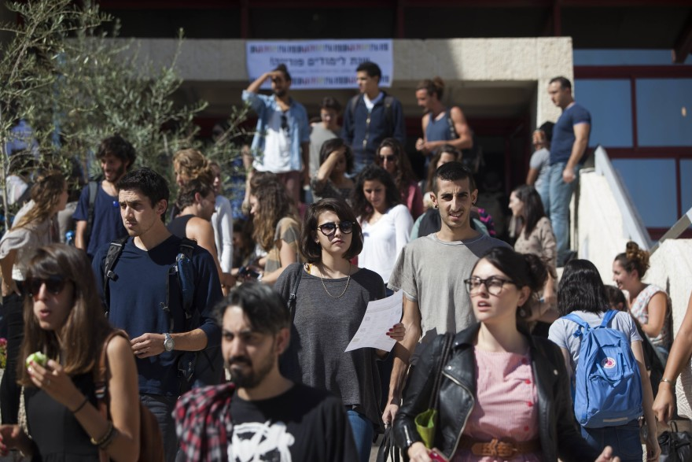
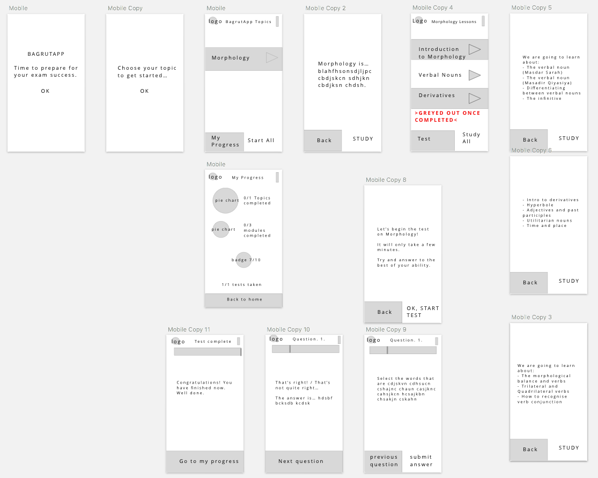

UX Research For An Advanced Grammar Revision App.
Te'udat Bagrut (Hebrew: תעודת בגרות) is the high school matriculation certificate in Israel. I researched how to approach building an advanced grammar app that would help students to revise for the exam in short bursts. This was a project in collaboration with Founders and Coders, Nazareth. Below is my first prototype, demonstrating layout:
And here is my comprehensive UX research document on GitHub, with user profiling, market research, pedagogical analysis, basic prototyping, colour theory in the learning environment, and suggestions for font.